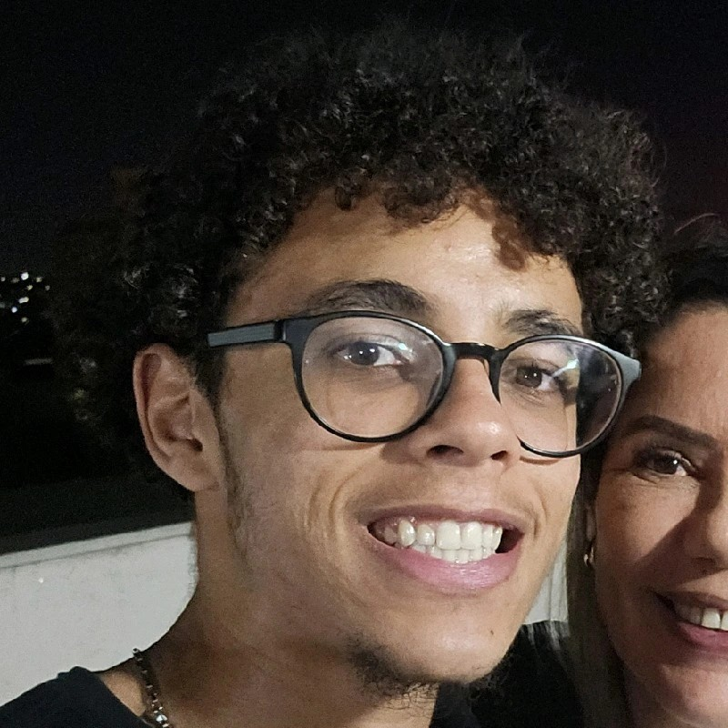

Lucas Maciel
Sumario

Olá, estou a procura de mais experiências de trabalho, ja trabalhei como menor aprendiz dando suporte de TI em sites e atualmente curso ciências da computação
Educação
- Colégio Tiradentes da Policia Militar de Minas Gerais | CTPM - MG | 2020 - 2022
- Bacharelado Ciências da Computação | Universidade Federal de São João Del Rei | UFSJ | 2023 - Atualmente
Experiências de trabalho
Habilidades
- Trabalho em Equipe
- Comunicação
- Proatividade
- Linguagem C
- Linguagem C#
- Sqldbx
- Desenvolvimento Web
- Informatica
Certificados
Contate-me
Meus Hobbies